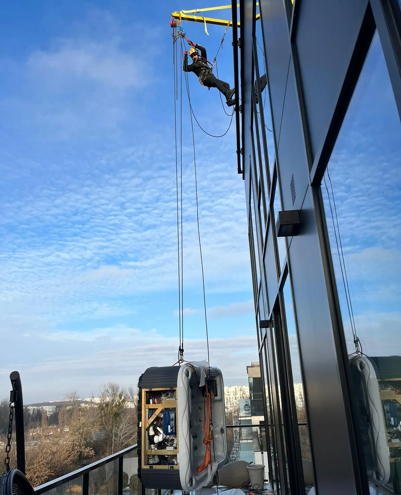
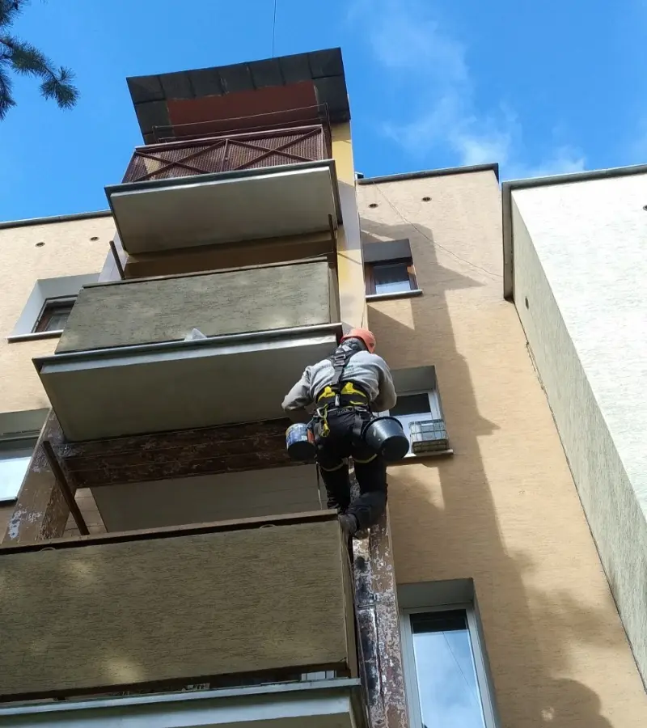
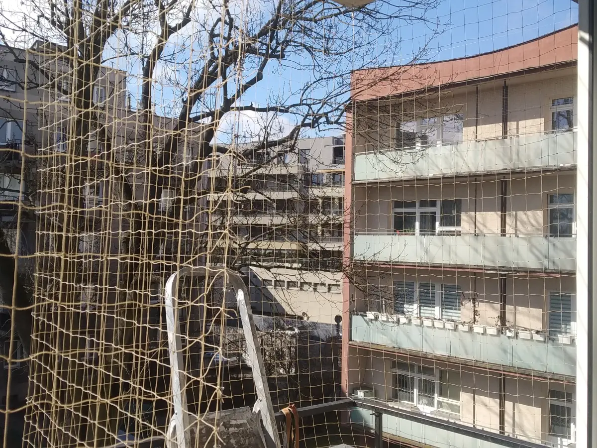

Odkręcenie i wycięcie części dachu i ponowne zamontowanie z
wykorzystaniem technik alpinistycznych prace służyły do wymiany
separatora gipsu.
Mycie i impregnacja elewacji dla Spółdzielni Mieszkaniowej - mycie z
wykorzystaniem chemii i gorącej wody.
Odkurzanie konstrukcji dachu wraz z słupami i ścianami.
Wciąganie przy pomocy technik linowych jaccuzi wraz z wykonaniem i zaprojektowaniem
odpowiedniego żurawia.

Malowanie natryskowe dachu szkoy.
Chemiczne czyszczenie elewacji z cegły przy użyciu chemii i gorącej wody z wykorzystaniem
technik alpinistycznych.
Czyszczenie wysokociśnieniowe 500 bar hali przemysłowej, w której były przetwarzane tworzywa
sztuczne.
Demontaż konstrukcji stalowej w trudno dostępnych miejscach - usługa cięcia
palnikiem i plazm na wysokoci.
Prace antykorozyjne i malowanie konstrukcji stalowej.

Montaż siatek zabezpieczajcych dla kotółw oraz przeciw gobiom.

Spawanie i montaż konstrukcji stalowych.